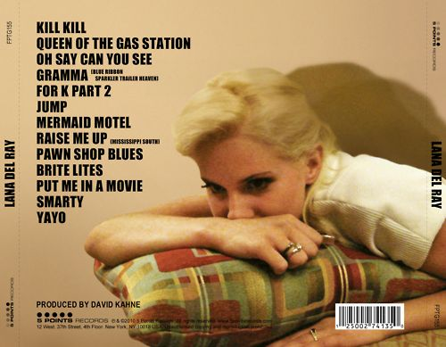
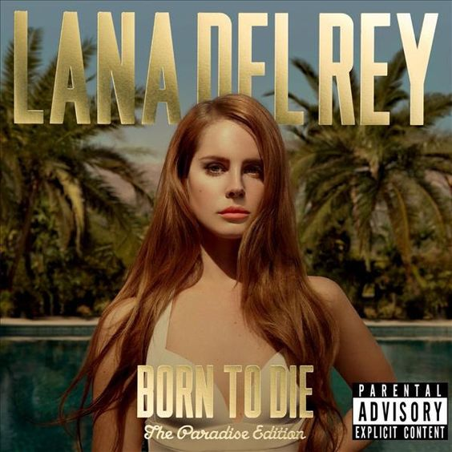
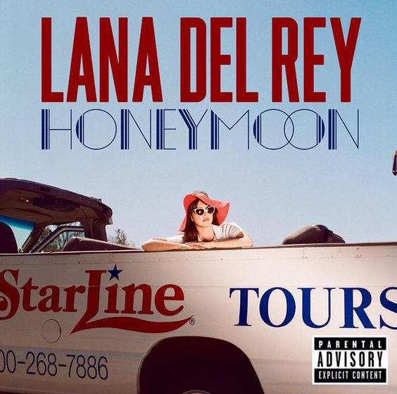
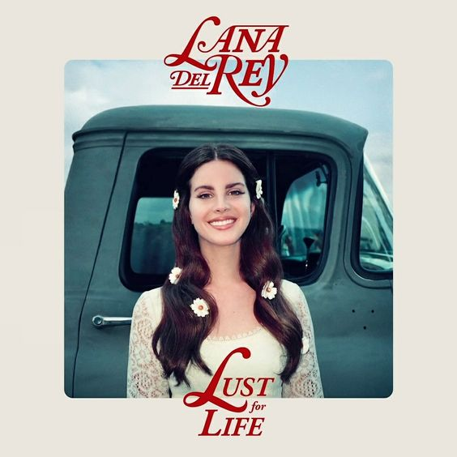
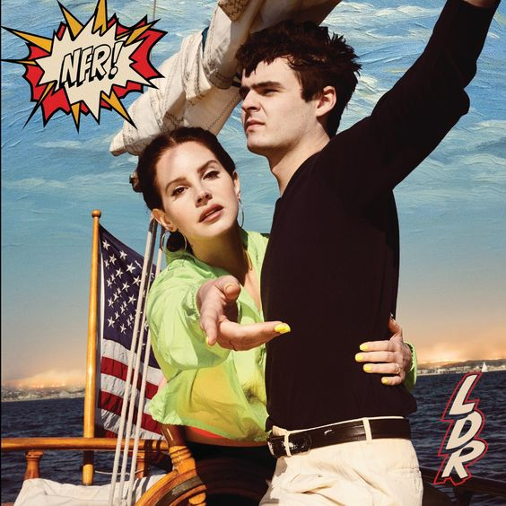

Lana Del Rey, cujo nome verdadeiro é Elizabeth Woolridge Grant, nasceu em 21 de junho de 1985 em Nova York, nos Estados Unidos. Ela é uma cantora, compositora e modelo reconhecida por seu estilo musical único, letras melancólicas e uma estética vintage.
Elizabeth cresceu em Lake Placid, uma pequena cidade no estado de Nova York. Desde cedo, demonstrou interesse pela música e começou a escrever suas próprias canções. Após concluir o ensino médio, ela se mudou para a cidade de Nova York, onde começou a se apresentar em pequenos clubes e cafés, buscando alcançar seu sonho de se tornar uma cantora profissional.
Em 2005, Elizabeth adotou o nome artístico Lana Del Rey e começou a lançar sua música de forma independente na internet. Ela atraiu a atenção de produtores musicais e, aos poucos, foi conquistando um público fiel. No entanto, foi em 2011 que Lana Del Rey ganhou destaque significativo ao lançar o single "Video Games" na internet. A música se tornou viral e acumulou milhões de visualizações, chamando a atenção da indústria musical.
Impressionados com sua voz hipnotizante e estilo único, os principais selos discográficos disputaram a oportunidade de trabalhar com Lana Del Rey. Ela acabou assinando um contrato com a Interscope Records e lançou seu álbum de estreia, intitulado "Born to Die", em 2012. O álbum foi um sucesso instantâneo, alcançando o topo das paradas em vários países e vendendo milhões de cópias em todo o mundo.
Desde então, Lana Del Rey lançou vários álbuns de estúdio aclamados, incluindo "Paradise" (2012), "Ultraviolence" (2014), "Honeymoon" (2015), "Lust for Life" (2017) e "Norman Fucking Rockwell!" (2019). Sua música incorpora uma mistura de gêneros, incluindo pop, rock, indie e trip-hop, e suas letras frequentemente abordam temas como amor, nostalgia, solidão e a cultura americana.
Além de sua carreira musical, Lana Del Rey também é conhecida por sua presença marcante na moda. Ela se tornou um ícone de estilo, com sua estética retrô, influenciando a moda e a cultura popular.
Lana Del Rey continua a evoluir como artista, explorando novos territórios musicais e conquistando um público cada vez maior. Sua voz distintiva e suas composições cativantes a estabeleceram como uma das cantoras mais influentes e originais da atualidade.
Álbuns
As várias eras de Lana del Rey
Lana del Rey

Born to Die

Ultraviolence
Honeymoon

Lust for Life

Norman Fucking Rockwell!

Curiosidades
Melhor clipe de cada era
LANA DEL REY: ENTRE FICÇÃO E REALIDADE
Algumas curiosidades sobre lana del Rey
Lana Del Rey não foi seu primeiro nome artístico, ela já se apresentou como May Jailer, Sparkle Jump Rope Queen, Lizzy Grant, Lana Del Mar e Lana Del Ray.
Segundo ela, sua experiência com a música começou na Universidade de Fordham, na qual, Lana estudou Metafísica.
Aos 15 anos Lana foi mandada para um colégio interno, em Connecticut, com o objetivo de controlar seu vício em bebida alcoólica.
Lana foi descoberta em 2011 por meio do Youtube com a música "Vídeo Games".
Grandes artistas, como Adele, Billie Eilish, Katy Perry e Taylor Swift já assumiram publicamente que são fãs da cantora.
Se tem um bicho que a cantora tem pavor é de aranha.
Outra curiosidade da Lana Del Rey é que antes de ser conhecida assim, ela já havia lançado dois álbuns: "Sirens", em 2006, como May Jailer e "Lana Del Ray A.K.A Lizzy Grant", em 2010, como Lana Del Ray. Ambos são encontrados na internet.
A sua principal inspiração musical foi Kurt Cobain.